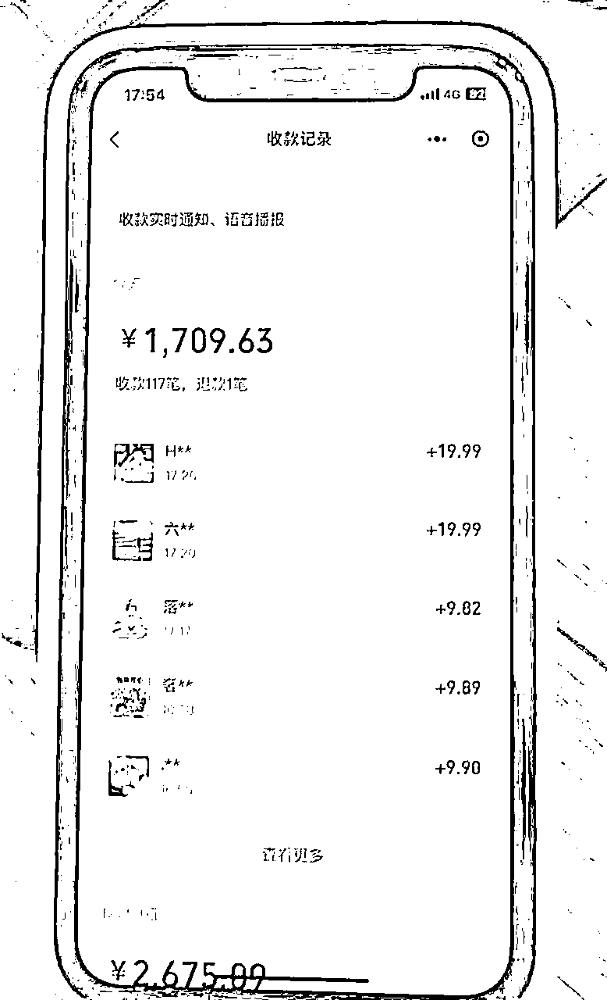
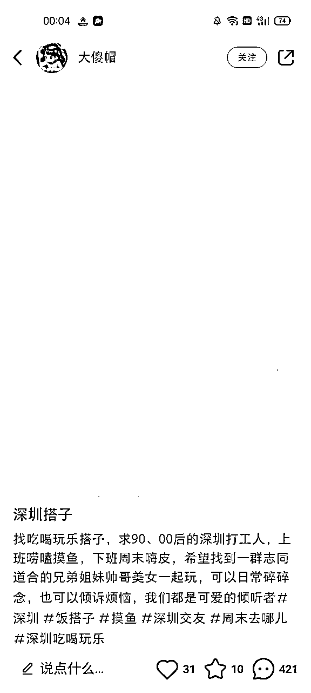
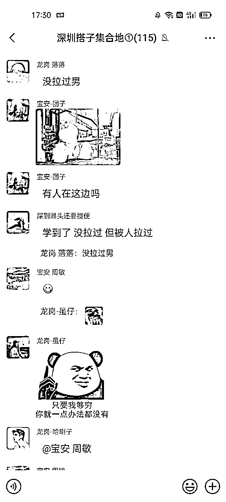
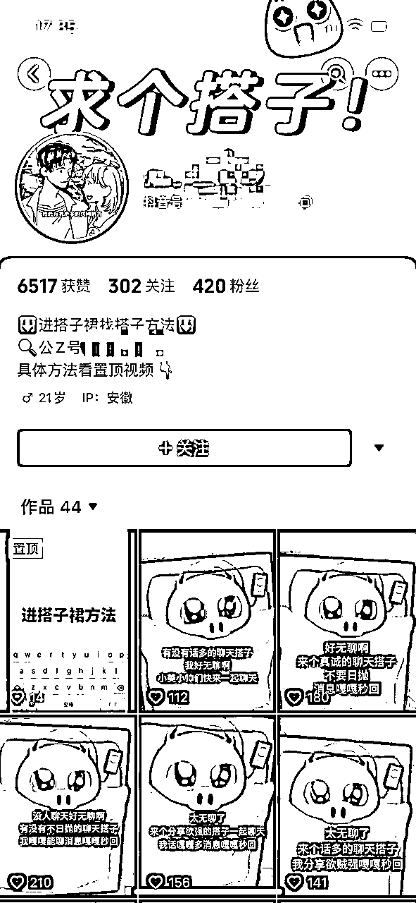
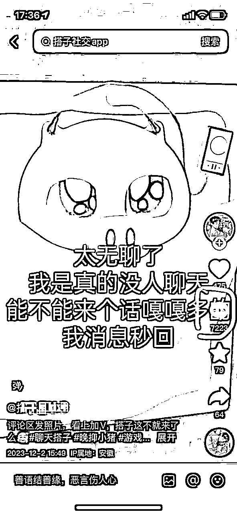
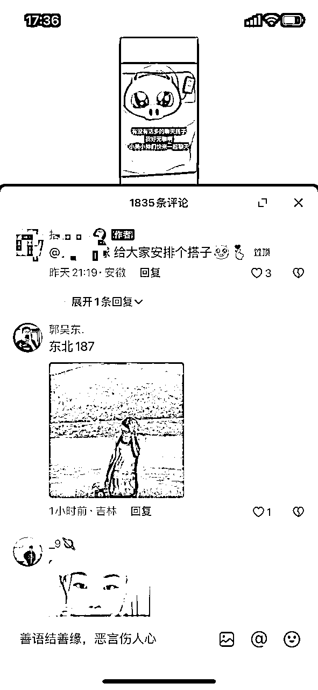
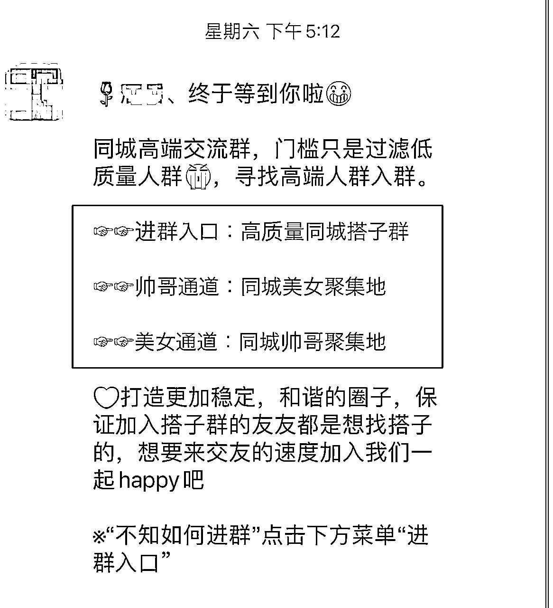
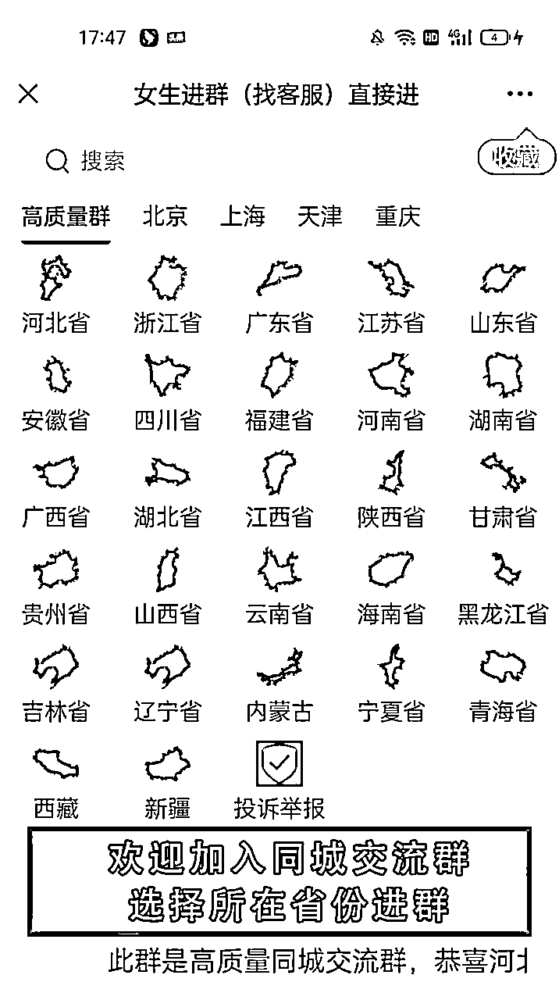

来源：https://vw816p5cncx.feishu.cn/docx/ZBhmdcHXXo3yyOxL9SEccNQrnS7
大家好，我是笑笑，前几天在生财分享的搭子经济，主打陪伴被列为了中标，今天继续给大家拆解这个项目的玩法
很多人可能不太明白搭子的含义
搭子其实是年轻人的社交文化交友演变新的代名词
例如饭搭子、健身搭子、减肥搭子、旅游搭子....这届年轻人凡事都给自己找个搭子。“搭子”其实说白了就是在某个兴趣，某个爱好上的朋友，只是现在的年轻人更愿意通过短视频平台去找到志同道合的陌生人，来弥补自己身边没有兴趣相投的朋友的情况。
年纪稍大的朋友可能会想到以前的人人网或者QQ空间，人是社交动物，无论男女老少，都有社交的需求，只是在不同的时代背景下，每个人社交的方式不一样。对于当下的16-30岁的年轻人来说，“搭子”这个新兴的词汇变成了他们社交的代名
瞄准了这个细分市场，自然想的是如何进行变现
我们参照了以前玩的相亲项目，慢慢演变出了搭子项目，或者也可以称为交友项目

生财里面的大佬比较多，相信之前比较火的同城相亲项目或多或少有了解一些，女的进群免费，男的进群收费9.9-39.9不等的价格一个人
美名其曰，防止下头男或者进群打广告等等
但是由于后面的各大平台F杀此类账号和内容，相亲项目也不得不选择退场
但在今年发现了一个小众赛道，也就是现在的搭子项目
玩法基本和相亲项目类似，女性进群免费，男性进群收门槛，测试的效果异常显著，并且流量也比相亲项目好很多
项目原理：在抖音/快手/小红书上面发布作品，在公域平台吸引用户到达我们的私域，从而进行转化，一单9.9-299


依然用之前发的风向标中标的图进行举例，类似于上面的小红书笔记内容，点赞仅有31个，但评论有四百多个，可见市场需求怎么样
基本发布几个作品就一个新群变成百人群
小红书倒流，例如粉丝群，@小号，评论区引导，私信手写微信然后拍照发送等等，都能一定程度上面进行引流到我们的私域，不是百分百安全，但是相对而言效果好很多，毕竟小红书账号很容易获得，这个就不做过多叙述了
接下来给大家介绍一个抖音的玩法，也是我们目前在做的玩法



就像这类的作品，抖音里面的特效，小猪的那个然后再配上一段文字，可能2-3分钟就能够制作完成
别看他就几百赞，但是流量高的吓人，四百多赞的作品，评论区七千多人进行留言，这些也都是我们的客户
例如背景墙，发布作品然后置顶视频（容易F号，不太建议尝试），评论区@小号等等进行倒流到我们的公众号，公众号内配合搭建的小程序，完成用户自助下单，无需人工干预
我先说我们目前在做的玩法，利用搭建的后台形成自动化变现，后面也会介绍不需要搭建系统的玩法
目前抖音背景墙和评论区@小号的方式倒流还算比较安全（新号不能直接倒流，不然会F号）
用户到达我们的公众号后，如图所示，会弹出以下界面

蓝色字体可自动跳转我们搭建好的系统

用户可自助选择所在地区，进行进群，一个人9.9-29.9的区间，标题的299一单的则为收徒，用户到了我们的私域，我们可以进行二次变现
我们做的是全国搭子群，则为每个地区都会有群，有专人进行维护
如果是正常普通人的话，一个人肯定做不了这么大规模的事情，可以建立当地的搭子群，只做一个地区的社群，发布作品带上定位，更为精准
虽然出单肯定是没有全国搭子群的高，流量也没全国的这么好，不过如果作为一个副业，一个月多个几千块其实也还算不错了
目前这个项目也是我们正在做的，也可以一起交流，相信执行力强的，看完上面的叙述应该自己也能够跑通了，希望各位圈友能够有所收获